Project: Covid-19
Introduction
As a final project concluding two Python courses I took in 2022, I analyzed data about registered cases and deaths of Covid-19 in countries around the world. These Python courses, "Data Analysis with Python" and "Data Visualization with Python", are created by IBM and hosted by Coursera. The aim of this project was to reveal any correlation between registered cases and deaths from Covid-19 on the one hand, and variables like life expectancy and GDP on the other. For this project I used Jupyter Notebook, and the entire Python script is descripted below. The datasets I used consisted of (1) Covid-19 cases, (2) Covid-19 deaths, (3) the UN's annual "worldwide happiness report" and (4) population per country. The first two data sets consist of daily updates of the number of registered cases and deaths in the period January 2020 to October 2022. The third data set consists of data from the UN and includes variables on life expectancy, GDP and more. Based on these variables, the Nordic countries are assessed as the world's happiest in this report, which can be seen under "overall rank" in the data set.
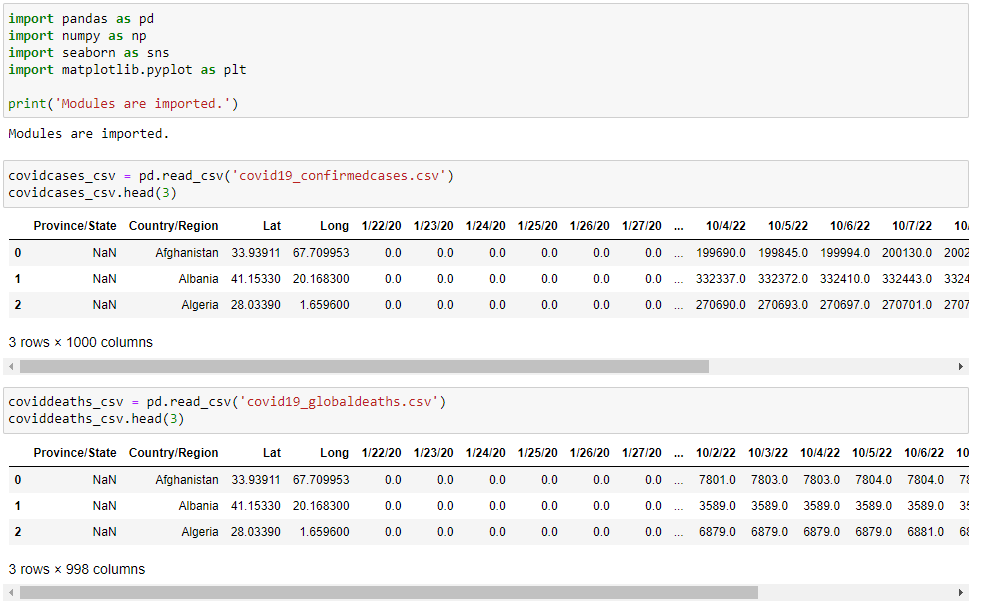 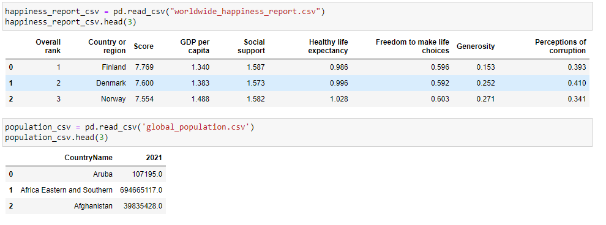Data processing
In the next steps, I processed the data. I removed some columns and aggregated three of the datasets to avoid including local provinces or counties in the dataset. Then, I created some different variables. The maximum infection rate (MIR) is a measure of the maximum number of recorded cases in a country in one day. As the daily number of cases and deaths in the datasets has been aggregated, for each day I simply subtracted the number of cases from the day before. There are some clear challenges with calculating this maximum infection rate, as the number of registered cases of Covid-19 in many cases were registered late or not registered at all. This variable will therefore only indicate what the situation in a country may have been like and when infection peaks occurred. Finally, I also change the names of a couple of columns.
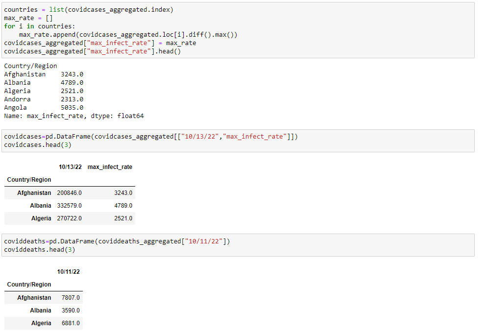I also aggregate the data from the "world happiness report" and create a new dataframe where I only keep the variables I consider most relevant, namely GDP per capita and healthy life expectancy. The term healthy life expectancy is a modification of life expectancy, as it only counts the number of years one is expected to live in good health, i.e. without illness or injury. In short, all datasets now consist of the variable "Country/region", between 1 and 3 additional columns and between 156 and 263 rows.
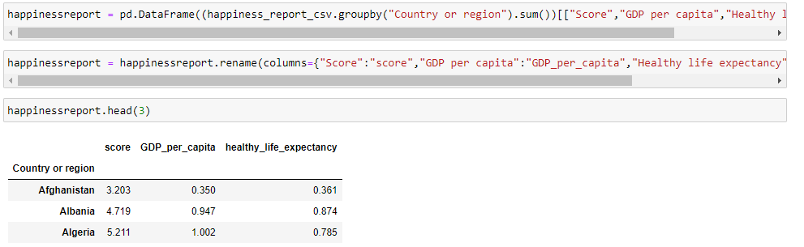 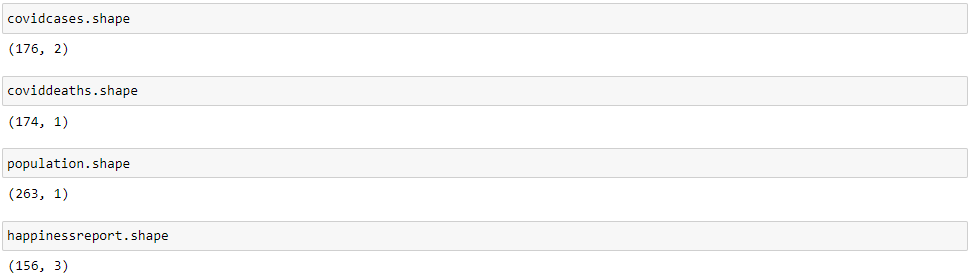With a common variable, namely "Country/region", I combine all the datasets through an "inner join". I also add 3 columns; the number of cases, the number of deaths and maximum infection rate. Before looking at any correlations, I use "describe" to get an overview and understanding of all the columns.
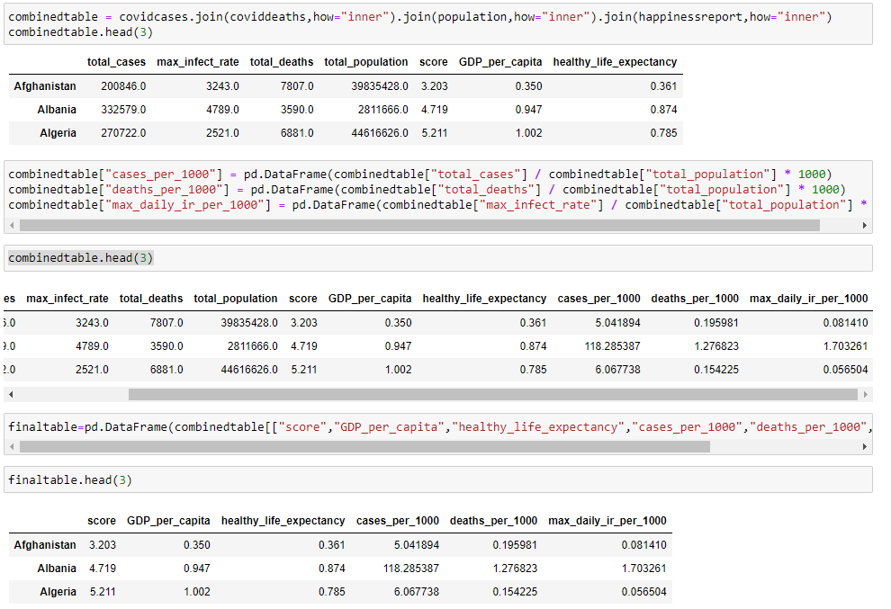 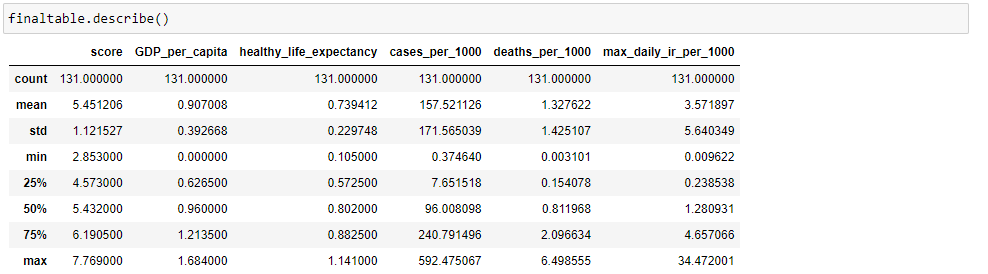Correlation and visualization
With the "corr"-command we can look for pairwise correlation in the data. Correlation measures how variables are related to each other, where 0 indicates no correlation and 1 indicates perfect correlation. In our data set, we clearly see that several variables are correlated. GDP per capita ("GDP_per_capita") and life expectancy ("healthy_life_expectancy") for instance, have a correlation of 0.86. This means that there is a strong positive correlation between GDP per capita, often used as a measure for wealth and life expectancy, used as a measure for health. For our study, we are looking for a potential correlation between GDP per capita, healthy life expectancy and our Covid-variables. As seen beneath, the correlation between GDP per capita and "cases_per_1000", i.e. the number of cases of Covid-19 per 1000 inhabitants, is 0.69. The correlation between "cases_per_1000" and life expectancy is 0.7. This is also shown below in two different scatter diagrams.
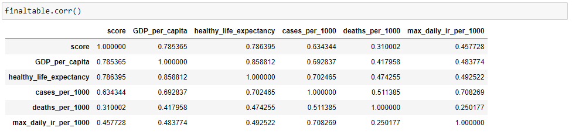 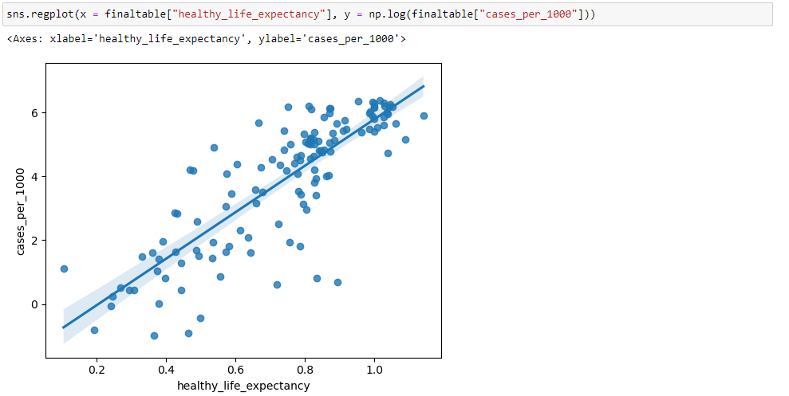
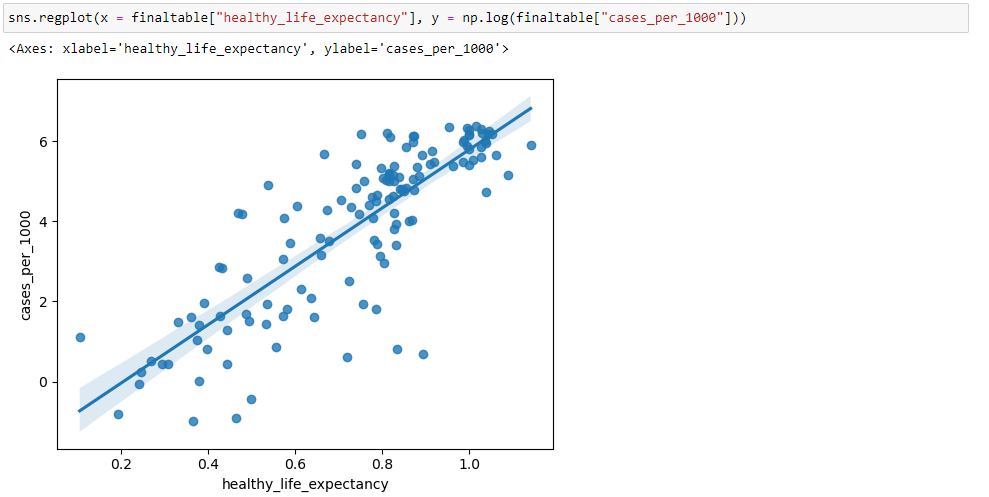
Another positive correlation of 0.48 and 0.49, respectively, exists between the maximum infection rate and GDP per inhabitant / life expectancy. This indicates that the number of registered Covid-19 cases is correlated to a country´s wealth, measured in GDP per capita, and healthy life expectancy. One reasonable explanation for this could be that wealthier countries registered more cases, as these countries often have the infrastructure and technology to register all cases. I many countries other countries, registered cases are suspected to only be the top of the iceberg of the real number of Covid- 19 cases. The same positive correlation exists between GDP per capita / healthy life expectancy and the number of covid-related deaths in a country. Correlation between these variables are 0.42 and 0.47 respectively, as shown in the diagrams below. Again, it is likely that not all Covid-19 related deaths were registered. However, some of this correlation may still be explained by the fact that many countries with a high life expectancy and GDP have a high proportion of elderly people in the population. It has been documented that Covid-19 was particularly dangerous for this population group.
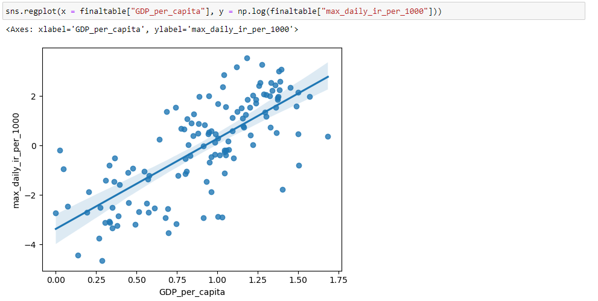 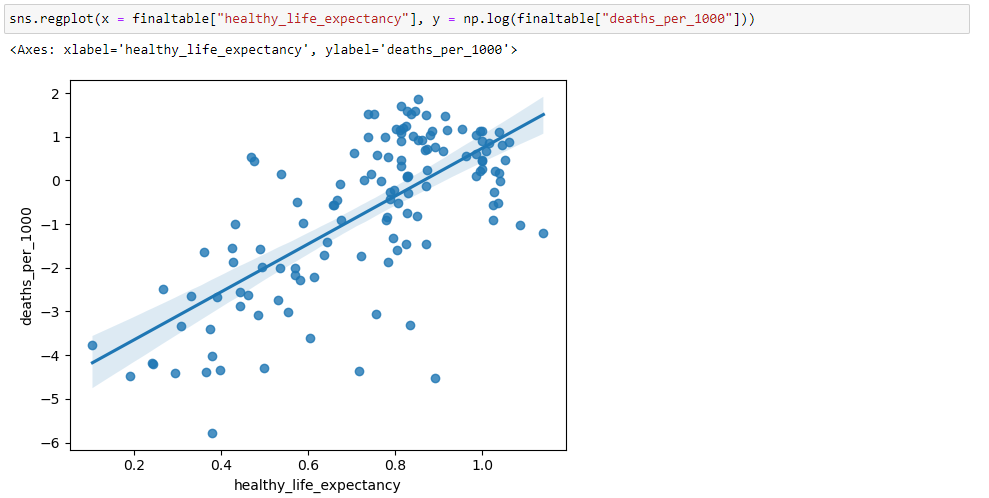